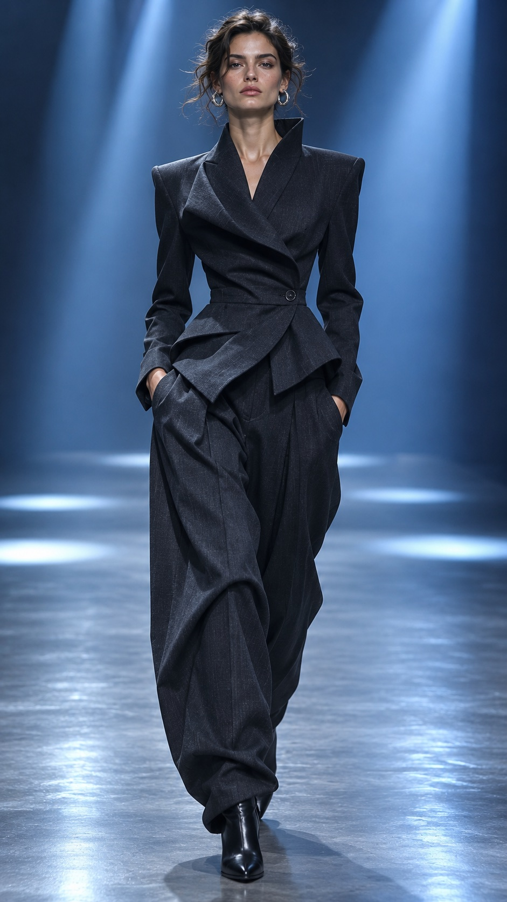
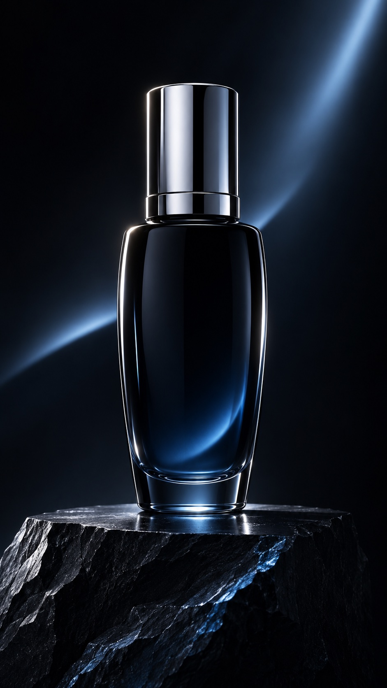
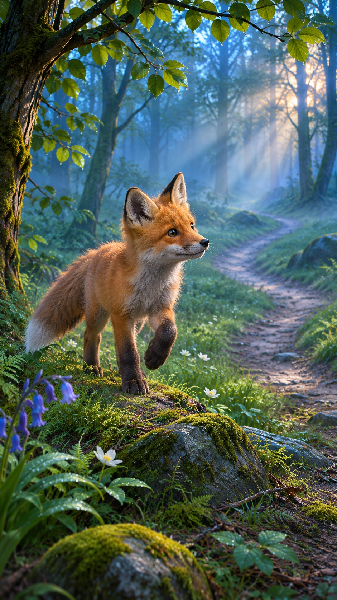
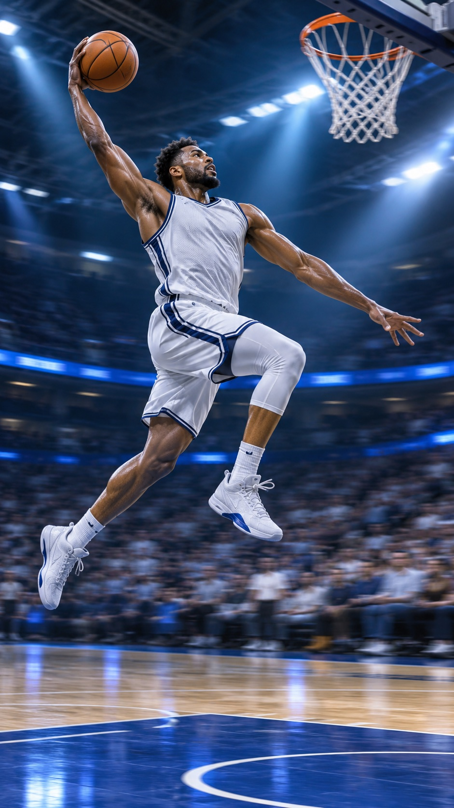

01 / PRISM CINEMA
テーマから見つける

ファッション
商品紹介
動物
スポーツプリズム・シネマ
トップ画像を広く使い、多彩なジャンルが集まる印象にする。
01「プリズム・シネマ」を現在のホームに反映しています。見出しとテーマカードを重ねて、実際のセクションに近い状態で比べられます。画像はすべてこのリポジトリ内の素材です。

ファッション
商品紹介
動物
スポーツトップ画像を広く使い、多彩なジャンルが集まる印象にする。
夜の街の光で、テーマ一覧を都会的で映画的な入口にする。
夕暮れの赤みで、創作への期待を温かく見せる。
ランウェイの暗い照明で、洗練されたギャラリーに寄せる。
室内の光と紫の影で、柔らかく幻想的な雰囲気にする。
車のシルエットと光で、スピード感のある背景にする。
競技場の光で、カードの並びに勢いを持たせる。
深い緑と自然光で、親しみやすい冒険の入口にする。
黒と金の照明で、プレミアムな作品棚の印象にする。
写真に頼らず、青紫の光と細い線で未来感を出す。